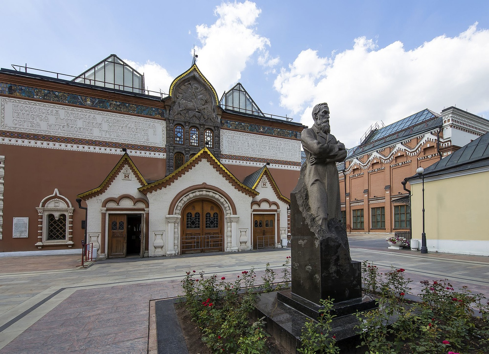

Третьяковская Галерея
Третьяковская галерея – это один из крупнейших музеев русского искусства в мире, расположенный в Москве, Россия. Музей был основан в 1856 году купцом и коллекционером Павлом Третьяковым, который пожертвовал свою коллекцию произведений русских художников городу Москве. С тех пор коллекция музея значительно расширилась и на сегодняшний день включает более 180 тысяч произведений искусства.
В Третьяковской галерее представлены шедевры русской живописи, скульптуры, графики, иконописи, а также произведения декоративно-прикладного искусства. Здесь можно увидеть работы таких выдающихся художников, как Илья Репин, Васнецов, Суриков, Шишкин, Левитан, Кандинский, Чагалл, Малевич и многих других.
Национальное искусство, история и культура России представлены в Третьяковской галерее во всем своем разнообразии и богатстве. Музей находится в нескольких зданиях, включая знаменитое здание на Лаврушинском переулке, где расположены основные экспозиции и выставочные залы.
Третьяковская галерея является не только музеем, но и общественным центром культуры и искусства, где проводятся выставки, мероприятия, лекции, концерты и мастер-классы. Музей привлекает множество туристов и ценителей искусства со всего мира, предоставляя возможность окунуться в удивительный мир русского художественного наследия.
Посещение Третьяковской галереи – это уникальная возможность познакомиться с великими произведениями русских художников, узнать историю и развитие русского искусства, а также насладиться красотой и глубиной произведений, которые вдохновляли поколения художников и зрителей.
Сотрудники
Экспонаты
О музее
Контакты
Телефон: +7 (977)-404-15-68
Email: museum.rus@gmail.com
Интересная информация
15.04.2024. Бесплатное посещение в Третьяковскую галерею в честь праздников..
Романюта Дмитрий
Посещение Третьяковской галереи поразило меня
красотой и мастерством русских художников, таких как
Репин, Шишкин, Суриков. Особенно впечатлила коллекция
икон XVIII века и картины Передвижников. Это был
незабываемый опыт, который рекомендую всем
ценителям искусства.